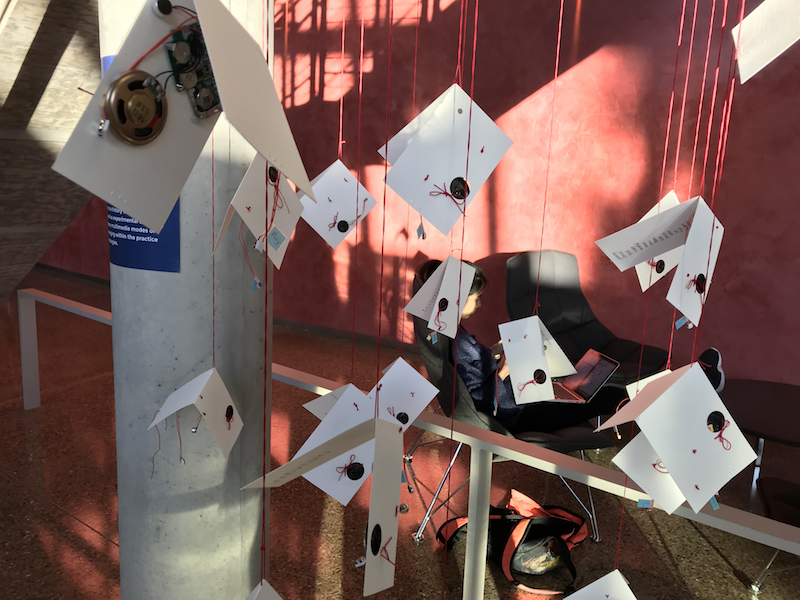
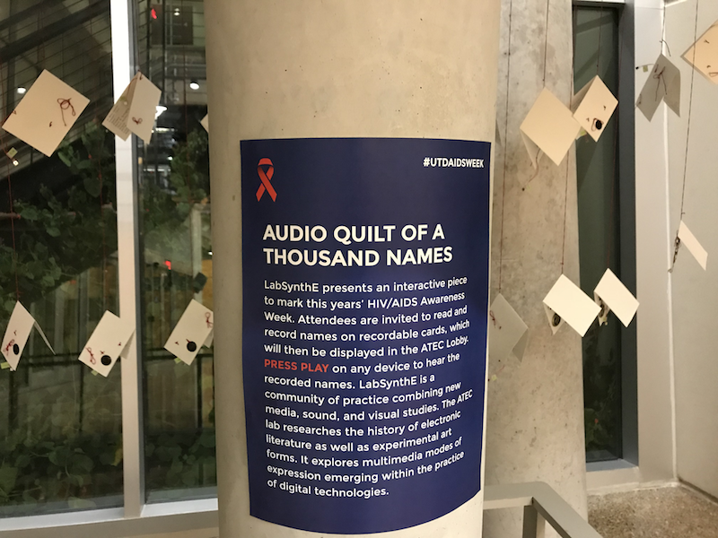
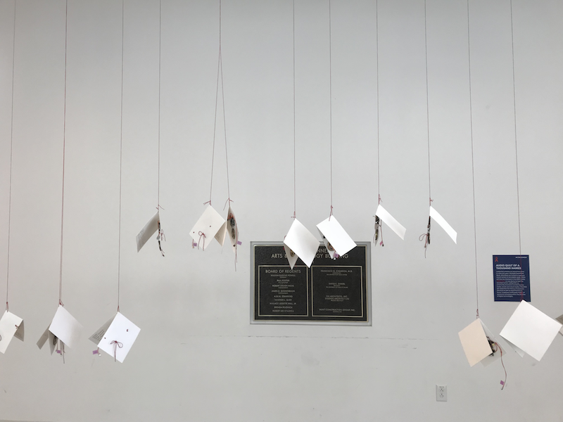
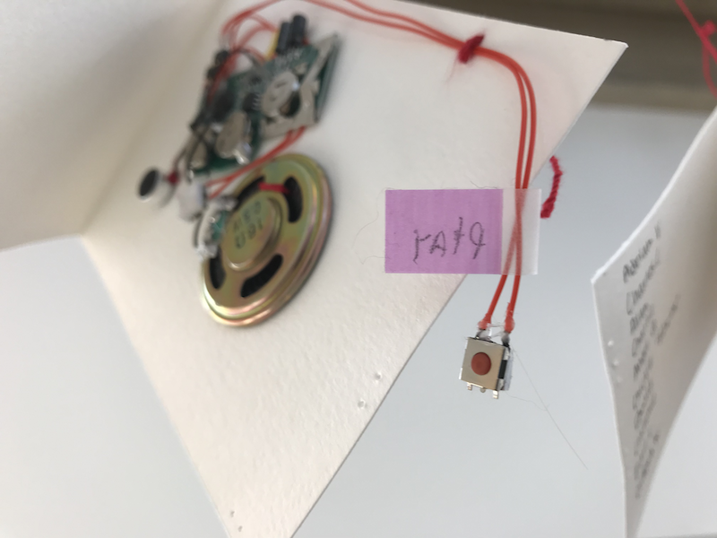

Contested Spaces: How We Made an Audio Quilt of One Thousand Names
xtine burrough
The University of Texas at Dallas
Letícia Ferreira
The University of Texas at Dallas
(Published September 18, 2019)
Introduction
LabSynthE is a creative arts laboratory investigating synthetic and electronic poetry in the School of Arts, Technology, and Emerging Communication (ATEC) at The University of Texas at Dallas. We are more of a studio and co-laboratory than a laboratory, however we call ourselves a “lab” to conform to language used in other spaces of sanctified collaboration, where art and scientific, computational, robotic and otherwise hybrid practices take on a “laboratory” format to express their experimentation. LabSynthE provides a framework for collaboration among faculty and students for creative practice, thinking, and exhibition, which take many forms. We have presented a DADA concert on the iconic ATEC stairway, a performance night at the Dallas Museum of Art, a formal art exhibition in CentralTrak (a Dallas gallery), an interactive sculpture to commemorate Holocaust Remembrance Day, a tour of exit signs in various galleries and academic exhibitions, as well as the project we detail in this essay. During the past two years we have collaborated with faculty from the school of ATEC as well as the School of Arts and Humanities, and students ranging from undergraduate arts students to MA, MFA, and PhD students.
LabSynthE’s History
The lab began in spring 2016 when the School was in its infancy, under the guidance of an interim Dean. Dr. Frank Dufour posted a sign on the door of a sound recording room, “LabSynthE: 12-2 on Tuesdays.” Professor xtine burrough joined the School and the lab in the same year, without knowing what she was stepping into, and found Dr. Dufour’s methodologies and interests parallel to her own, so she committed to staying with the lab as a co-organizer. During their first year and a half, the lab consisted of Dufour and burrough with approximately eight regular attendees at weekly two-hour meetings. They produced three exhibitions (one on campus for Holocaust Remembrance Day and two at sites off campus) and a sound recording that became the only U.S. work selected as a finalist in the 2017 HearSay international audio competition. The lab typically operates as follows: someone suggests an event or festival for which we could create a piece or a proposal; the team meets to think, discuss, and research; we decide on a conceptual direction, produce materials and present work in diverse spaces. Sometimes we write collaboratively about our work and process. Many times, projects take on multiple iterations (like our projects Radium Girls by the co-authors of this paper and Lion’s Breath co-produced by the lab) and influence new works, as we get inspired in our research and discussions. At times, a member may have an idea for a project they are developing, or some path they are intrigued to investigate, and the whole lab gets involved, providing feedback, participating in experimental discovery, discussing and revising one member’s work, which at times becomes the work of the lab as a collective. For instance, Letícia Ferreira’s poetry projects of spring 2017 became a focal point of experimentation for many lab members, which then inspired how The Radium Girls was exhibited in a sound art exhibit around the same time.
Dr. Dufour’s background in sound recording and professor burrough’s experience in participatory art and installation inform many of the practices of the lab. Conceptually, Dr. Dufour’s interest in phenomenology and professor burrough’s interest in remix studies and appropriation spark dialog between projects that ignite ideas, both abstract and concrete, that lab members reflect on for continuous conversations at lab meetings and on our Slack channel. While LabSynthE does not consider itself a space for Matt Ratto’s notion of “critical making,” we align with Garnet Hertz’s collaborative, DIY approach and foster a “crash course in understanding how something actually works” by making projects together. To date, memory, translation, and poetics are recurrent themes in the projects developed by LabSynthE collaborators. People who were part of the lab and collaborated in the project explored in this paper with burrough and Dr. Dufour are Delaney Conroy (BA), Ritwik Kaikini (MA), Morgan Grasham (MFA), Clayton Harper (MFA), Letícia Ferreira (PhD), Sean Landers (PhD), and professors Dr. Heidi Coley and Dr. Sabrina Starnaman. Many of these contributors participated in different moments of the project from conception to production.
Contested Spaces and Challenges
Since we developed unconventionally, without sanction from the School, we were not provided a meeting room or budget. During the first year and a half we saw no reason to ask for a room—we met in the sound recording room, familiar to Dr. Dufour and his regular students. However, in fall 2017 Dr. Dufour went on leave, and with professor burrough (who does not teach sound) organizing the group we lost privilege to the sound recording room. We became nomadic, checking out rooms or working in other labs where group members held affiliations.
As a group of artists, LabSynthE is always interested in finding places for exhibition. We have tested projects on campus and taken them to academic conferences and media arts exhibits, and we have been able to work together to produce a group exhibition of related works, but one challenge we often face is finding new places to exhibit a work of art that the lab can produce together. When ATEC’s new Dean, Anne Balsamo, brought her Public Interactive Research Lab (PIRL) and ongoing AIDS Quilt Touch Project to the School, she also initiated a version of HIV/AIDS Week. In 2017 that event included opportunities for creative responses.
The AIDS Memorial Quilt and The Reading of Names
The AIDS Memorial Quilt is the largest ongoing art community project in the world. In the 1980s, during the peak of the AIDS crisis, San Francisco activists created two by three foot panels on which they would write the names of loved ones who died of HIV/AIDS complications. These panels were sewn in groups of eight, creating a twelve by twelve-foot block. In 1987 the NAMES Foundation was created to care for the Quilt and manage its growth, a role it still plays today. The Quilt was displayed in the Washington DC Mall six times; more than a collaborative piece of art, it is an important tool of political action that calls attention and pressures government and other stakeholders to look for solutions to the AIDS crisis. It is part of the tradition of the AIDS Quilt to read names of the people commemorated by it during the day(s) of its display. This is normally performed on a stage, with a microphone.
Since 2002, Anne Balsamo and Dale MacDonald have worked to create the AIDS Quilt Touch (AQT), a project which aims to digitally preserve and augment the AIDS Memorial Quilt. Since then, many different institutions and researchers have collaborated in different iterations of the project. In 2010, Dr. Balsamo and her team were awarded a Digital Humanities Implementation Grant by the National Endowment for the Humanities. The Public Interactives Research Lab (PIRL), led by Dean Balsamo and Associate Dean MacDonald, is one of the partners in the last iteration of the AQT project. As part of its commitment to HIV/AIDS activism and social justice, the lab annually organizes the UT Dallas HIV/AIDS Awareness Week, in partnership with other institutions of the University and the School. The events include displays of blocks of the AIDS Quilt, free HIV testing, talks and reading of names from the Quilt uninterruptedly for a day during International AIDS Day (December first).
In 2017, labs and communities in ATEC were invited to create works of art or installations as part of the HIV/AIDS Week programming. Having Ferreira play a double role, both as the executive producer of AIDS Week and a regular member of LabSynthE, certainly elevated the potential interest level; however, we believe LabSynthE will continue to hold interest in this invitation. It is an opportunity to create a work of art open to a generous amount of traffic and interaction, the theme is coherent with the lab’s progressive ideas, and the AIDS Memorial Quilt involves community, memory and ritual, all research interests of the lab. As a conceptual, poetic, and practical opportunity, it offers a rich form for participation: every year we can choose to iterate on the same piece or explore other possibilities within a similar environment. For the HIV/AIDS Week of 2017, LabSynthE focused on the action of reading the names but shifted the nature of the interaction—what is usually public, loud, and witnessed—became an intimate and poetic participatory installation.
Conceptual Threads
Before we started making we had several meetings in which our production was in the realm of dialog. We produced ideas. Having read names aloud during the prior year’s event, professor burrough remembered how it felt to stand on stage and what it was like to look at the students who congregated in this public space—some attentive, some eating a snack, some talking to friends— and how moving it was at the end to add the names of people she knew and people she wanted to remember. These experiences informed the first broad brush stroke that would paint a portrait of the audio quilt we would create in just under eight weeks. The first pitch for the project was for an interactive card that we would hand to passersby in the ATEC lobby with an invitation to record themselves reading names. Our participants would print any additional names inside the cards, mirroring the reading of the names that happens when the AIDS Memorial Quilt is displayed. burrough suggested minimal, white cards, with a red thread keeping the card sewn shut, and no other visual designs on the card other than the recording device and hand-written names. We imagined that for our version of the reading and recording to be gentle, it would require a LabSynthE member to interact with each participant by giving her a card and some amount of instruction. We envisioned taking people under the stairwell in the lobby where students meet or rest between classes to record their readings, then hanging the cards in installments of twenty each day for the duration of AIDS Week. Junichi Murata writes about the ambiguity of technological artifacts—including DIY products, “One of the important and most general reasons we create technologies is to free ourselves from various types of work. However, if we examine this aspect of technology more closely its ambiguous character becomes apparent” (153). The DIY recording device freed LabSynthE from the work of hosting or staging the reading of the names, and instead relocated this public activity inside another ambiguous artifact, one that is, like the squares of the quilt, crafted by hand. Murata characterizes “technological artifacts as co-actors;” and during this installation we imagine ourselves as the hosts, the guests we give each card to as the invited reader, the cards as the keepers of the names, both written and recorded—and later played (154). In this sense, there are multiple co-actors on the scene. Beginning with the humans: There are members of LabSynthE; people walking through the ATEC lobby who agreed (and some who did not agree) to take a card and record a list of ten or more names; and people wandering or stalling in the ATEC lobby who played the cards. The non-human co-actors, if we call all technological artifacts co-actors, must include not just the DIY recorders but also the cards themselves, with the hand-written list of names and needlework.
One of the most interesting conversations we had was a negotiation of whether we should use DIY technology for the sound recorder inside the handmade card or create the recording devices ourselves. Weighing the price per unit, time for delivery and production, the size of our team (nine collaborators in total), and time until HIV/AIDS Week (date of our installation), we had to use a readily available DIY technology. Pedagogically, we found merit with Hertz’s claim that the “process of being humiliated by things that you think are easy or mindless is a valuable experience.” In one conversation we wondered if we could call ourselves “artists” if we did not make the things we produced. Ultimately, we are artists who appropriate, hack, and reimagine how the DIY recording device is designed for interaction. Unlike Ratto’s claims for critical making, in which the prototype materializes critical thinking “to extend knowledge and skills in relevant technical areas as well as to provide the means for conceptual exploration,” our platform was made for public interaction, as a space for participants to explore (253). Our critical reflection happens during the conceptualization and brainstorming phase, and in the interactions between the work of art, the space and public participants (253). Ratto states that “the final prototypes are not intended to be displayed and to speak for themselves” (253). Displaying, observing, and learning from the interventions a work provokes is an essential part of LabSynthE’s iterative practice.
By the end of the production period, we spent more than twenty hours creating the hand-made cards, with a rotating three to four team members collaborating on an assembly line that would make Ford proud. We arrived at using a “DIY 1 Push” recording device specifically made for cards available from Big Dawgs, priced at a discount in our bulk order. This year the Dean allotted an endowment to professor burrough that she was able to share with the lab, so funding for this project was readily available. In the future, the lab will need to find a sustainable source of funding. It has become obvious in the two and growing years that LabSynthE requires its own space and funding.
Chain Piecing: Learning by Doing
As soon as we received our first Big Dawgs recording device we were able to create an alpha version of the handmade card. A Visiting Associate Professor who joined us on this project, Dr. Heidi Cooley, suggested we sew the recording device into the card. Embedding the technology of the quilt into the card was an aesthetic and structural suggestion that was in conceptual alignment with the primitive idea for the card. Like the AIDS Quilt Touch project, it uses technology to expand the traditions and rituals of the AIDS Memorial Quilt. The reading of names is an ephemeral performance. Our project allows for the ritual of remembering a person by saying their name to be recreated every time one presses a button, therefore expanding the performance to one that is intimately mediated through technology. Like the public reading of names, our Audio Quilt is also ephemeral by the chance that the battery dies or the installation participant/viewers re-record on top of recorded names.
Nine of us met to start a production line two weeks before AIDS Week (burrough, Conroy, Cooley, Ferreira, Grasham, Harper, Kaikini, Landers, and Starnaman). We had most of the project conceptually worked out but realized that the recording device did not have holes or a space where we would easily be able to sew it into the card. burrough pushed the needle through the fleshy part of the speaker to secure it to the paper and Dr. Cooley sewed a bow on the back of it; Ferreira sewed down the cable wires; Kaikini realized we should replace the piece that covers the battery so it would not run out before our installation began. Within the first hour of collaborating on the design of the card, the team experienced what Gilbert Simondon would refer to as an aesthetic sensation, which stayed with us throughout our assembly line process (see figure 1). Simondon writes, “Aesthetics is not only, nor first and foremost, the sensation of the ‘consumer’ of the work of art. It is also, and more originally so, the set of sensations, more or less rich, of the artists themselves: it’s about a certain contact with matter that is being transformed through work. One experiences something aesthetic when one is doing a soldering or driving in a long screw” (3). Some of us talked about the aesthetic experience while we were making the cards. Conroy and burrough shared that they were both silent and “in the zone,” the work transforming them into a meditative state, while others were talking about television shows, movies, and the upcoming holiday. We also talked about how coming together to make the piece resembled how panels of the AIDS Memorial Quilt were made: collectively, in workshops at community centers.

Figure 1. LabSynthE members collaborating on the production of An Audio Quilt of A Thousand Names.
Then we realized our most productive roles: burrough is slowest at threading needles and fastest at cutting and folding paper; Ferreira, Cooley, and Starnaman can work the needle and thread quickly; Kaikini took each recording device from the box, tested it, and replaced the paper near the battery with a red ribbon; Grasham wrote many names. Kaikini and Conroy met again to cut and fold cards, and insert recording devices on a separate working day, prepping the lab for sewing before the Fall holiday. Harper and Landers helped to sew in various parts of the production line, as we met at different times during the two weeks prior to our installation. Thus, the team worked together to produce their version of the quilt of one thousand names.
Twenty Cards a Day for Five Days
AIDS Week took place from Monday, November 27 – Friday, December 1, 2017. During each day at noon we set twenty of our cards on the table next to the display of a block of the AIDS Memorial Quilt (see figure 2).

Figure 2. Cards presented on the table near the AIDS Memorial Quilt where passersby chose one at random to untie and record their reading of the names. Cards were collected at the end of the day and hung by a LabSynthE member in the growing installation throughout the week.
When we invited passersby to participate in the project, we knew we would have to provide instructions for participating in our project. What we did not predict was how it was almost always necessary to discuss the history of the AIDS Memorial Quilt, the reading of the names tradition and the importance of the HIV/AIDS Awareness Week event. At times, the display of blocks of the AIDS Quilt, the outreach and awareness campaign happening on a table next to it and the Audio Quilt became different layers of the same performance/project, as we shared space, time, and team members. Young students, who were often puzzled by the AIDS Quilt display and needed time to understand its historical context, would frequently be excited to participate and record names on the cards. We suggested participants record their reading under the stairs, which became the “official” site of private, intimate performances of remembrance.

Figure 3. On Monday we installed the cards beneath a stairwell on the east side of the ATEC building.

Figure 4. On Tuesday we installed the cards under the stairs on the west side of the building.

Figure 5. Wednesday through Friday we installed the cards hanging together, over a central space of study and passage.
We hung the cards at the end of each day in different parts of the building (see figures 3, 4 and 5), so they would slowly occupy more of ATEC’s uncontested lobby space as the week passed. Because we did not want to permanently alter the recording devices, we tucked the recording button and cables into the board and attached a “Play” label near its button before hanging each card (see figure 6). Even so, some people pressed the record button—accidentally or not—while trying to play the installation, and would therefore erase the previous recording. This was a risk of the project. However, we embraced this as a valid possibility of interaction by the people who pass through the ATEC building. Just as the messy artifacts of humanity occur in the listing of the names, and people fumble in the live readings, we account for these types of unexpected human interactions as part of our creative inquiry in the public installation of this paper version of the Audio Quilt of One Thousand Names. We expected to de-install our interactive sculpture on December 1st, but the facilities team suggested it remain active in the space. The audio quilt hung until late February when facilities needed the lobby cleared for an event.

Figure 6. Close-up view of one card ready to be installed.
Iterative Practices
The team was great at coming together to cut, fold, stitch, and create. During AIDS Week we knew we needed help, but we forgot to ask for it prior to the week of the event. Throughout the week—and it was a busy week near the end of the semester, a tough time to ask people at school for extra help—we could have used more voices and hands to explains the project to passersby and hang the installation. Murilo Paiva Homsi is an affiliated member of LabSynthE who was greatly involved in assisting us with the installation of this project each night during the week. In retrospect, one thing that would have been helpful was to create a sign-up sheet for this performative labor. When the cards were set on the table for public interaction, they were not yet a finished work of art. Instead, they were a call for participation that held a potential for creative interaction. They only became objects of art that “speak for themselves” after they were finished by the participants who interacted with them and were hung together in a cluster. To engage an audience with such an intimate project, the artist or someone on the artist’s behalf must talk with the person who becomes a collaborator in the project (or a voice for our quilt). Help comes in various forms, however, and it is important to embrace the creative ways that people provide their assistance. Kaikini made a documentary of the Audio Quilt of One Thousand Names for our archives and social media (see figure 7), which showcased the cards hanging with a choir of voices reading names in his video.
An Audio Quilt of One Thousand Names, by LabSynthE from Trace on Vimeo.
Figure 7. Documentary video by Ritwik Kaikini of An Audio Quilt of One Thousand Names, by LabSynthE. Edith O’Donnell Arts and Technology Building at The University of Texas at Dallas, November 27-December 1, 2017.
We found that most people pressed the “Play” button, as we expected. We also noticed many people who pressed one, and then two, and then multiple play buttons to hear a choir of names read at sites of installation as seen in Kaikini’s documentation. The proximity of the cards to one another, and their location—in the lobby at easy-to-reach heights—set the stage for a relatively easy interaction. We spent a lot of time pressing the play buttons in this highly public space, so we could have been influencers. Once someone sees one person interacting with the work, the aura of the art is altered. Not surprisingly, by the end of the week, some of the cards played a static hum. This was a result of the “Record” button having been pressed instead of the “Play” button, despite the clarity of the labeling system we put in place.
The devices came with a recording wire labeled with a yellow sticker and the letters, “REC.” However, the play button was unlabeled. We added our own, slightly larger and more legible (and printed by hand, to create aesthetic unity with the cards), “Play” labels to encourage viewers to interact with the installation. The white cards and red thread from which they were hanging were designed so minimally that these labels provided a contrast in hue and shifted the visual weight of a counterbalance on the horizontal axis in relationship to the cards that were suspended from above. In a next iteration of the project we will discuss removing the record button from the wire after the names have been recorded. Questions to inform future iterations would include: If only the play button is available, are we suggesting that the one reading of the names listed on the card is final? With the record button in place (as it was this time), we offer the possibility for multiple versions of the reading of the list of names. The cards can be removed, re-stitched together, taken to a new site, and re-recorded. Like the plurality of voices during the reading of the names on December 1st, with the recording button intact, we keep the card open to this same possibility.
Contested/Uncontested: The past, present, and future of LabSynthE
While LabSynthE began as an unofficial lab, it has offered a highly productive creative practice for faculty and graduate students in and affiliated with the School. As a result of the amount of production, quality of the work, and places where the work has been showcased, the lab is likely to soon fall outside of the contested domain and enter a more official role in campus community. Sometimes our practices touch on uncontested areas, like the professionalization of graduate education, for instance, reminding graduate students to submit works to new media festivals when deadlines approach. Other times, our operations also border on contested zones of operation, like when the Communications Department followed us to three different labs in an hour because we do not have a dedicated room and we had to find the best lighting conditions in an available room during the week before fall break for their photographers. In many ways LabSynthE is like our audio quilt. It is synthetically pieced together, everyone plays a part, we are learning who we are through shared, creative practice, and we are iterative.
We look forward to how future iterations of our practice will develop as we become more official in the School. We operate under many constraints including time, space, and funding, and our process has always been connected to these conditions. For now, we are awaiting a new space, which will be helpful not only for meetings and production but also for storage—we have amassed one hundred cards, five bird cages, a retro “Bar Aid” recipe holder, Raspberry Pis, soldering irons, straws, a handmade “black box,” a paper cutter, leftover paper, sewing materials, and of course online repositories for code, videos, photos, and essays. Parts of projects are skewed in various labs and offices throughout the School. The University granted us a website on the labs.utdallas domain, which will appear more authentic to outsiders than our prior URL, which was stored on a second-level folder of burrough’s portfolio website. We do not yet know if we will be guaranteed funding, but we continue to work with the materials we have and to generate projects and proposals for public audiences.
Works Cited
Hertz, Garnet, editor. Making Critical Making. Hollywood, CA, Telharmonium Press, 2012. http://conceptlab.com/criticalmaking/.
Murata, Junichi. “Creativity of Technology: An Origin of Modernity?” Modernity and Technology, edited by Thomas J. Misa, Philip Brey, and Andrew Feenberg, MIT Press, 2003, pp. 227-256.
Ratto, Matt. “Critical Making: Conceptual and Material Studies in Technology and Social Life.” Information Society vol. 27, no. 4, 2011, pp. 252–260. doi.org/10.1080/01972243.2011.583819.
Simondon, Gilbert. “On Techno-Aesthetics.” Translated by Arne De Boever. Parrhesia, no. 14, 2012, pp. 1-8.